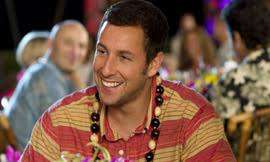
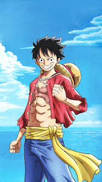
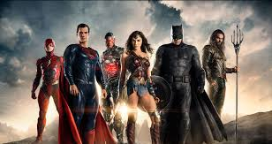

| Comédia |
Dennis Dugan |
Esposa de mentirinha: Infeliz em sua tentativa de casamento, Danny passa a vivenciar relacionamentos sem compromisso para driblar a carência. Assim, ele toca sua vida como cirurgião plástico bem sucedido, tendo sua melhor amiga Katherine, mãe solteira de um casal, como fiel escudeira. Quando conhece a jovem Palmer e a paixão toma conta de ambos, ele inventa, para tentar conquistá-la, que é marido de Katherine, pai das crianças e que vai se separar. Assim começa uma verdadeira aventura amorosa recheada de confusões. |
 |
| Anime |
Eiichiro Oda |
One Piece: Traduzido do inglês-Monkey D. Luffy, também conhecido como "Chapéu de Palha" Luffy, é um personagem fictício e principal protagonista do mangá One Piece, criado por Eiichiro Oda. |
 |
| Aventura |
Zack Snyder |
Liga da Justiça: Impulsionado pela restauração de sua fé na humanidade e inspirado pelo ato altruísta do Superman, Bruce Wayne convoca sua nova aliada Diana Prince para o combate contra um inimigo ainda maior, recém-despertado. Juntos, Batman e Mulher-Maravilha buscam e recrutam com agilidade um time de meta-humanos, mas mesmo com a formação da liga de heróis sem precedentes, poderá ser tarde demais para salvar o planeta de um catastrófico ataque. |
 |